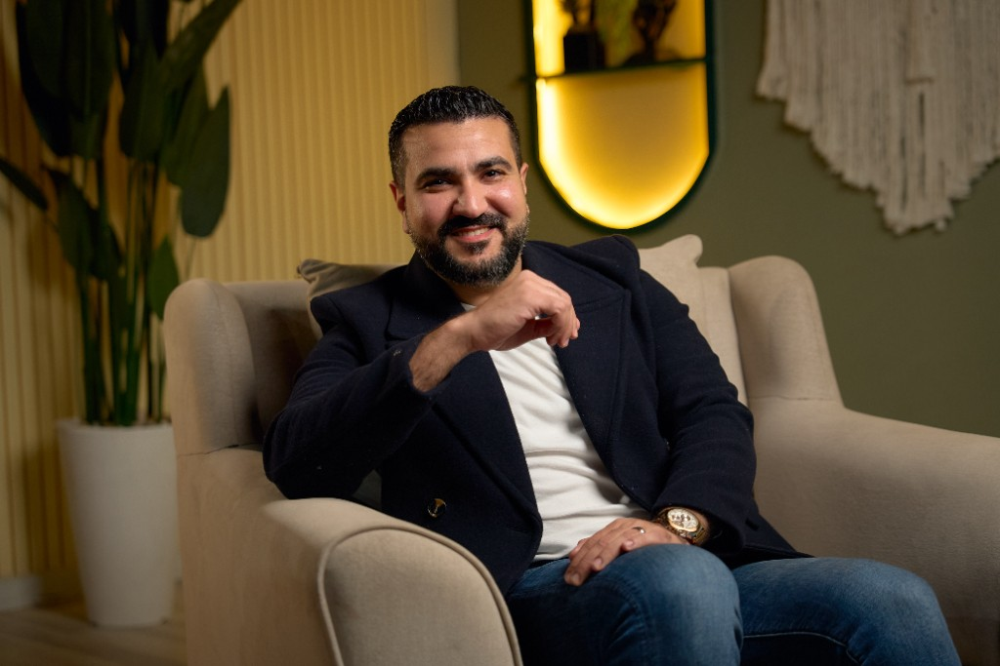
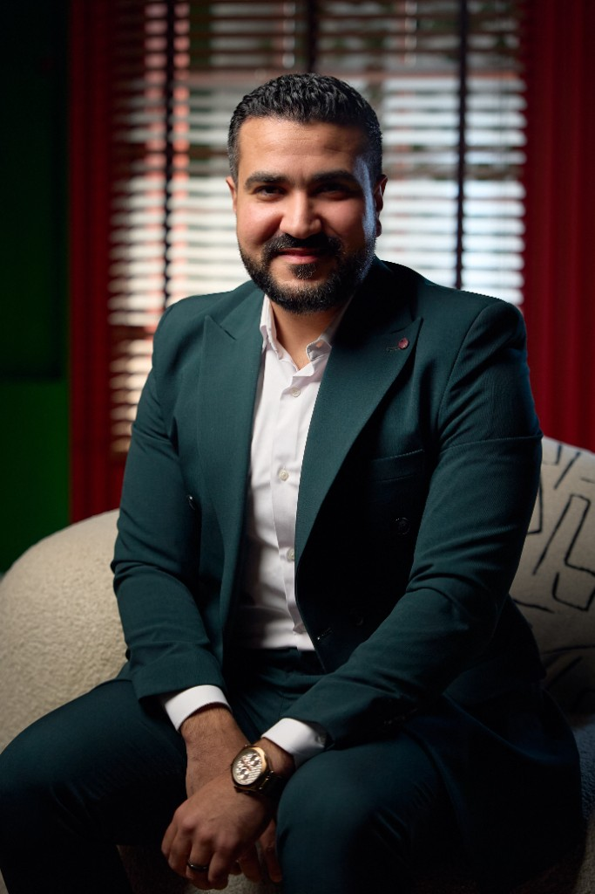

PhD in Ophthalmologyدكتوراه طب وجراحة العيون
Highest specialized academic degree in ophthalmologyأعلى مؤهل علمي تخصصي في طب وجراحة العيون
Consultant Ophthalmologist & Retina Specialistاستشاري طب وجراحة العيون والشبكية
PhD in Ophthalmology, Fellow of the Royal College of Surgeons of Edinburgh (England), and member of the International Council of Ophthalmology (Switzerland). More than 15 years of medical and surgical experience in precise retina surgery, cataract removal, and advanced laser vision correction.دكتوراه في طب وجراحة العيون، وزميل الكلية الملكية للجراحين في إدنبرة (إنجلترا)، وعضو المجلس الطبي العالمي لطب العيون (سويسرا). أكثر من 15 عاماً من الخبرة الطبية والجراحية في جراحات الشبكية الدقيقة، إزالة المياه البيضاء، وأحدث تقنيات تصحيح الإبصار بالليزر.
Highest specialized academic degree in ophthalmologyأعلى مؤهل علمي تخصصي في طب وجراحة العيون
Edinburgh — United Kingdomإدنبرة — المملكة المتحدة
Geneva — Switzerlandسويسرا — جنيف
Cataract & refractive surgery societyلجراحي المياه البيضاء وتصحيح الإبصار
Specialized experience in precise eye surgeryخبرة متخصصة في أدق جراحات العيون
Experience & Visionخبرة ورؤية
Dr. Ahmed Sheikh Elarab is a consultant ophthalmologist specializing in retina and vitreous surgery, precise cataract (phaco) procedures, and advanced laser vision correction.
He holds a PhD in Ophthalmology and completed his academic journey with a Fellowship of the Royal College of Surgeons of Edinburgh (England), along with membership of the International Council of Ophthalmology in Switzerland and the European Society of Cataract and Refractive Surgeons, while continuously following the latest surgical technologies.
His treatment philosophy combines precise diagnosis with safe, minimally invasive surgery, and personalized human care for every patient — aiming for the highest success rates, faster recovery, and stable vision restoration.
الدكتور أحمد شيخ العرب هو استشاري طب وجراحة العيون، ومن المتخصصين في جراحات الشبكية والجسم الزجاجي، وعمليات المياه البيضاء الدقيقة (الفاكو)، وتصحيح عيوب الإبصار بأحدث تقنيات الليزر.
حصل الدكتور أحمد على درجة الدكتوراه في طب وجراحة العيون، وتوّج مسيرته العلمية بزمالة الكلية الملكية للجراحين بإدنبرة (إنجلترا)، إلى جانب عضوية المجلس الطبي العالمي لطب العيون في سويسرا، والجمعية الأوروبية لجراحي المياه البيضاء وتصحيح الإبصار، مع متابعة مستمرة لأحدث ما توصلت إليه التكنولوجيا الجراحية.
ترتكز فلسفته العلاجية على الجمع بين التشخيص الدقيق والتدخل الجراحي الآمن بأقل تدخل ممكن، مع رعاية إنسانية واهتمام فردي بكل مريض لضمان أعلى نسب النجاح وأسرع فترات التعافي واستعادة رؤية مستقرة.
Sight is a blessing and a trust; we protect it with precise diagnosis, safe intervention, and care worthy of the patient’s confidence.الإبصار نعمة وأمانة؛ نحافظ عليها بتشخيص دقيق، وتدخل آمن، ورعاية تليق بثقة المريض.
Dr. Ahmed Sheikh Elarabد. أحمد شيخ العرب
15+ years of surgical experience & excellence15+ عاماً من الخبرة والتميز الجراحي
Continuous specialized experience in precise retina and eye surgery.خبرة تخصصية متواصلة في أدق جراحات الشبكية والعيون.
Thousands of cases managed with precision and careful follow-up.آلاف الحالات التي تم التعامل معها بدقة ومتابعة دقيقة.
Patient and family trust in care quality and follow-up.ثقة المرضى والعائلات في جودة الرعاية والمتابعة.
Nasr City, Mohandessin, and Fifth Settlement.مدينة نصر، المهندسين، والتجمع الخامس.
Professional & international credentialsاعتمادات مهنية ودولية
An academic and surgical record recognized by leading medical bodies in Britain, Switzerland, and Europe.سجل أكاديمي وجراحي معتمد من هيئات طبية عالمية في بريطانيا وسويسرا وأوروبا.
The highest specialized academic degree in ophthalmology, with focus on precise retina and cataract surgery.أعلى درجة علمية تخصصية في طب وجراحة العيون، مع تركيز على الجراحات الدقيقة للشبكية والمياه البيضاء.
One of the world’s most prestigious surgical fellowships, reflecting excellence and high professional standards.من أعرق الزمالات الجراحية عالمياً، وتشهد بالكفاءة والالتزام بأعلى المعايير المهنية.
Membership of the leading global council that sets training standards for ophthalmologists worldwide.عضوية المجلس العالمي الرائد الذي يضع معايير تدريب أطباء وجراحي العيون حول العالم.
Staying current with innovations in lens implantation and modern laser surgery.مواكبة أحدث الابتكارات في زراعة العدسات وجراحات الليزر الحديثة.
Advanced experience treating retinal detachment, diabetic retinopathy, and precise vitreous surgery.خبرة متقدمة في علاج انفصال الشبكية، اعتلال الشبكية السكري، وعمليات الجسم الزجاجي الدقيقة.
Cataract removal with advanced techniques and premium lenses for related refractive correction.إزالة المياه البيضاء بأحدث التقنيات وزراعة عدسات متقدمة لتصحيح عيوب الإبصار المرتبطة.
Vision & Missionرؤيتنا ورسالتنا
An integrated medical approach that combines scientific precision with human care.منهج طبي متكامل يجمع بين الدقة العلمية والرعاية الإنسانية.
To always earn the patient’s trust through specialized ophthalmology care built on expertise, precision, and continuous development.أن نكون دائماً عند ثقة المريض، عبر رعاية متخصصة في طب وجراحة العيون تعتمد على الخبرة والدقة والتطور المستمر.
Our goal is not only to treat the condition, but to provide a medical experience where patients feel confident and receive the best possible care for their needs.هدفنا ليس فقط علاج المشكلة، بل تقديم تجربة طبية يشعر فيها المريض بالثقة والاطمئنان، ويحصل على أفضل رعاية ممكنة وفق حالته واحتياجاته.
Technology & equipmentالتقنيات والتكنولوجيا
Modern equipment supporting precise diagnosis and safe intervention.تجهيزات حديثة لدعم التشخيص الدقيق والتدخل الآمن.
 Surgical Suite
Surgical Suite
A safe surgical environment dedicated to precise eye procedures.بيئة جراحية آمنة مخصصة لجراحات العيون الدقيقة.
 OCT Scan
OCT Scan
More accurate diagnosis of retina and optic-nerve conditions with 3D imaging.تشخيص أدق لحالات الشبكية والعصب البصري بتصوير ثلاثي الأبعاد.

Diagnostic SuiteDetailed examinations that help build a clear treatment plan from the first visit.فحوصات تفصيلية تساعد على بناء خطة علاجية واضحة منذ الزيارة الأولى.

Laser UnitModern laser technologies supporting surgical and non-surgical options as needed.تقنيات ليزر حديثة لدعم خيارات العلاج غير الجراحي والجراحي حسب الحالة.
Your care journeyرحلتك العلاجية
A clear, organized path from the first visit through post-treatment follow-up.مسار منظم وواضح من أول زيارة وحتى المتابعة بعد العلاج.
A careful assessment using specialized tests based on your complaint.تقييم دقيق للحالة باستخدام فحوصات متخصصة حسب الشكوى.
Explaining results and treatment options, then choosing what fits your case.شرح النتائج وخيارات العلاج واختيار الأنسب لحالتك.
Performing the procedure in an equipped setting with precise standards when surgery is needed.تنفيذ الإجراء في بيئة مجهزة وبمعايير دقيقة عند الحاجة للجراحة.
Monitoring outcomes to support stable vision and safe recovery.متابعة النتائج وضمان استقرار الرؤية والتعافي الآمن.
Start your clearer-vision journey todayابدأ رحلة وضوح الرؤية اليوم
Book your consultation now with Dr. Ahmed Sheikh Elarab at one of our branches, and receive specialized care to the highest standards.احجز موعد استشارتك الآن مع الدكتور أحمد شيخ العرب في أحد فروعنا، واحصل على رعاية متخصصة وفق أعلى المعايير.